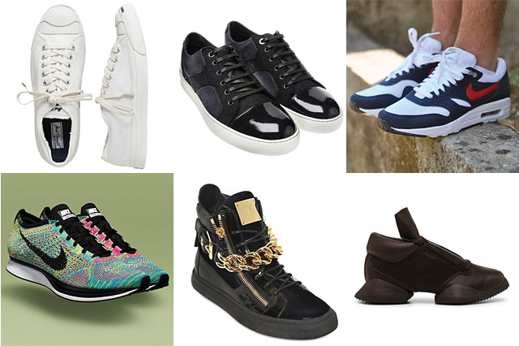

White sneakers
27/06/16 12:45Newsflash: your sneakers are meant for more than just the gym. Though they got their start as flimsy “plimsolls” meant for working-class holidaymakers and purpose-built footwear designed for athletes, sneakers have become a staple in a every man’s (and woman’s, for that matter) wardrobe. Now your sneakers can be a fashion statement as well as workout gear – maybe even both at the same time. Special thanks to Robert Ferris from Harrolds for providing this week’s expert tip.

Sneakers come in many shapes and sizes these days. From the very basic to the brightest leather, from the minimal to the metal fastenings, there are few rules when it comes to your trainers. With so many options available, it can be hard knowing exactly what’s what and even harder to know what’s most likely to suit your wardrobe and taste.
I know that when I started wearing Golden Goose it was because I loved the way their white sneakers looked. They came dirty and with suede accents and grey laces and if you wanted, a splash of green or red or gold. What I’m not sure about is what initially elicited my interest in wearing white sneakers at all. Until two years ago, they were much more nurse taking vitals than they were tennis — or street style — star.
The thing is, I certainly didn’t figure my proclivity for white rubber soles a trend so much as I did a function of how I liked to look. But now, with Hedi Slimane’s sneakers for Saint Laurent, The Great Adidas Original Comeback (my mom will jovially brag that she’s been wearing hers, no break, since 1972 which is not a lie) and any number of fashion sneaker brands mimicking the shoes that hearken back to the preferred footwear of The Wonder Years‘ Winnie, it’s probably time to reassess that thought and perhaps even suggest that you too jump on this bleached bandwagon?
READ MORE...
Category: SHOES